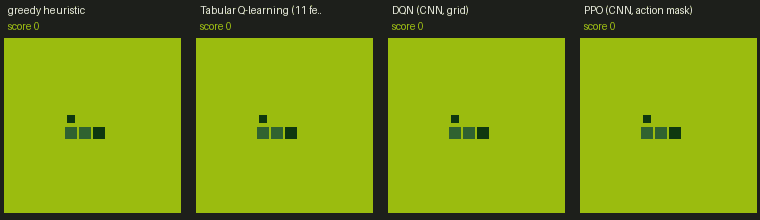
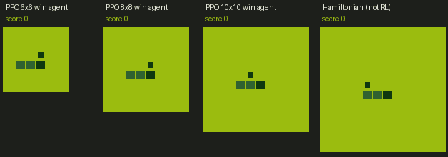

Snake RL from scratch
A free reinforcement-learning course built on one tiny game. Read the theory, run the code, then watch what you trained play in your browser.


The curriculum
| # | Topic | Read | Download |
|---|---|---|---|
| 01 | Tabular Q-learning: MDPs, Bellman backups, ε-greedy, why the 11-feature state hits a ceiling | interactive note | .docx |
| 02 | Deep Q-networks: function approximation, replay, target networks, Double DQN, GPU-batched environments, and a failed run diagnosed | interactive note | .docx |
| 03 | Upgrading DQN: dueling, prioritized replay, action masking, with a multi-seed ablation | interactive note | .docx |
| 04 | Policy gradients and PPO: REINFORCE, baselines, GAE, clipping, on- vs off-policy, throughput on a small GPU | interactive note | .docx |
| 05 | The win challenge: fill the whole board. Curriculum learning, sparse rewards, long horizons, and a planner that never loses | interactive note | .docx |
| all | The whole course as one book | — | snake_rl_master.docx |
Try the agents
The game page lists every trained agent, grouped by algorithm family, with its test score, size and speed. Pick one to watch it, or race two on the same seed. Everything runs in your browser, with no server and no install.